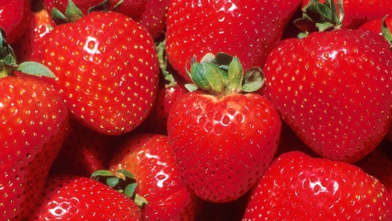
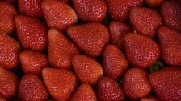
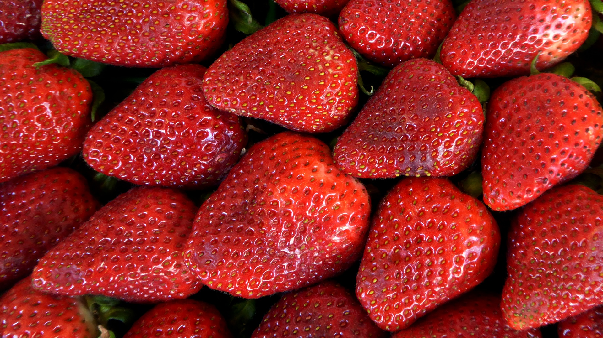

Strawberries!



About the Creators
Tyler Morris and Jake Scheck are strawberry aficionados who want to educate others about the wonders of strawberries. Their passion for the small red fruit is very apparent on this site. Whether you are new to strawberries or a raging fanatic, this site has something for everyone. Use the bar at the top or the links in the footer to navigate the site and learn more about strawberries!